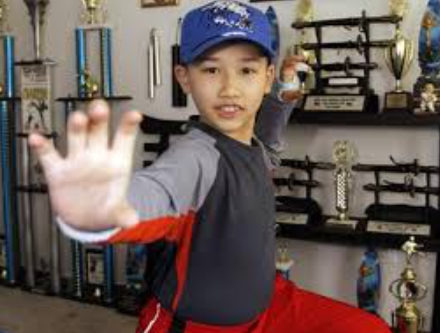
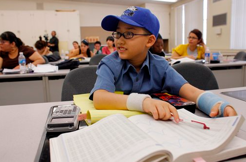
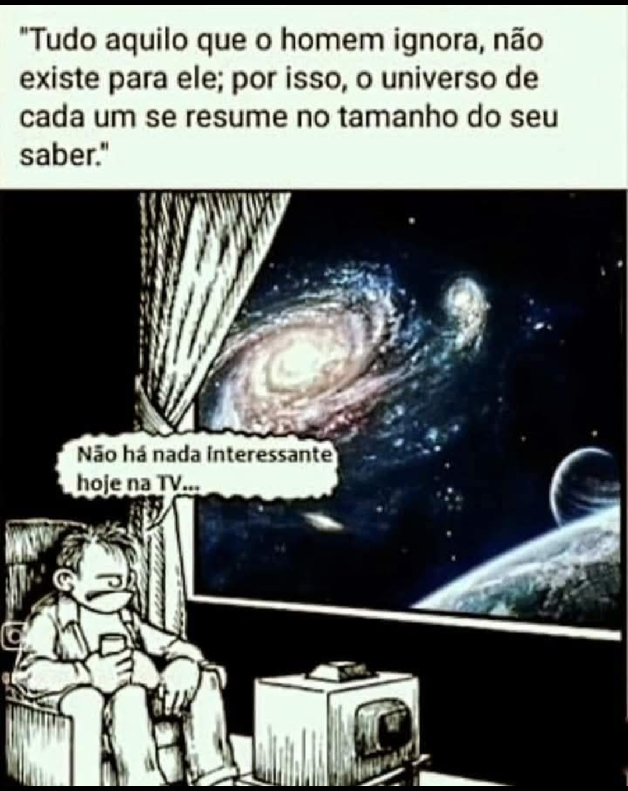

Desligue a televisão e vá ler um livro!
"Tédio, falta de criatividade, confusão, burrice, conformismo...Desliga a televisão e vá ler um livro!" era um dos slogans de um dos comerciais da emissora de TV "MTV Brasil", que foi exibido no ano de 2004. Mensagem forte que vinha antes do canal sair do ar por 15 longos minutos.
O intuito, à época, era incentivar os jovens a ler mais livros, aumentar seu repertório cultural e se tornar mais crítico diante dos dilemas de uma sociedade complexa. Não resta dúvida de que de alguma forma a MTV revolucionou a TV com essa proposta, jamais se viu um veículo de comunicação sacrificar seu público, ainda mais em favor da literatura.
A campanha fez barulho e criou polêmica nas mídias tradicionais em um tempo em que a internet ainda não havia se popularizado tanto, mas já existia.
Assim como Stanislaw Ponte Preta dizia que ela era a “máquina de fazer doido”, podemos dizer que agora essa máquina é a internet.
Mas será que atualmente, com a internet e a tecnologia, desligar a TV é o suficiente?
A única coisa que nos resta é atualizar o discurso: Desliga o computador e o celular e vá ler um livro!
Texto retirado e editado do site:
homoliteratus.com
O último vídeo acima é um trecho do filme Network (1976). Você pode encontrar esse vídeo pesquisando no YouTube como "Howard Beale: Turn off your TVs".
Howard Beale é um personagem do famoso filme Network (1976), dirigido por Sidney Lumet e escrito por Paddy Chayefsky. Beale é um apresentador de um programa de notícias de uma emissora de TV que, após ser demitido, tem um surto ao vivo na TV e começa a fazer discursos intensos sobre a corrupção da mídia e os efeitos negativos da televisão na sociedade.
O discurso mais famoso de Howard Beale, conhecido como o "Turn off your TV" ou "I'm mad as hell and I'm not going to take it anymore" (algo como "Estou furioso e não vou mais aguentar isso"), acontece quando ele começa a exortar o público a desligar a televisão e se rebelar contra as manipulações da mídia. Ele se torna um ícone no filme, representando uma crítica feroz à cultura da televisão e à exploração das emoções do público para audiência e lucro.
O discurso de Beale reflete o ponto de vista de que a televisão não é apenas uma fonte de informação, mas também um meio que manipula o comportamento das pessoas e as afasta de questões mais profundas e significativas. O filme é uma sátira poderosa e ainda muito relevante sobre os meios de comunicação e a sociedade.
Sinopse
Um locutor de noticiário de uma rede de televisão estadunidense é demitido em razão da baixa audiência do programa. Ele então anuncia que irá cometer suicídio no ar. Por esta razão, os índices de audiência do programa voltam a crescer, ele passa a ser conhecido como o Profeta Louco, e é readmitdo. Mas seu comportamento insano faz com que os responsáveis pela sua ascensão decidam detê-lo.Fonte: Wikipédia - Network (1976)
Veja o vídeo abaixo - título: “Conversa com Eduardo Marinho”. Do canal do YouTube: “TV Olhos D’Água - TV Uefs”, sobre televisão aos 22m:19s até 23m:49s.
E abaixo, o mesmo trecho transcrito:
“...pra você seguir uma razão que está aprisionada em valores falsos, criados por uma galera que é contratada para fazer a cabeça da população. Psicologia do inconsciente, publicitários, jornalistas, antropólogos, sociólogos, tudo contratado, colocado na mídia, constituindo laboratórios de pensamento que planejam uma mentalidade a ser implantada, os valores, a visão de mundo. A própria realidade eles distorcem. E aí a mídia vai dentro da casa de todo mundo e coloca.
A pouco tempo atrás eu soube que o estado estava dando conversor de televisão digital na cesta básica. É generosidade isso? O estado não garante os direitos constitucionais: não garante alimentação, não garante moradia, não garante porra nenhuma! Mas dá o conversor de televisão digital! Isso é controle mental! Evidente que é controle mental.
Precisa ter uma televisão na casa daquele miserável, pra que ele continue se sentindo incompetente. O cara não tem chão na casa dele, mas ele tem uma televisão ali funcionando. Isso é uma necessidade do sistema social.
É o que eu sempre digo: quando você liga a televisão, você acabou de abrir a porta para o inimigo. Ele vai lá dentro da sua cabeça para construir a sua visão de mundo. Construir os seus desejos, seus objetivos de vida, suas opiniões, seu comportamento, seus valores. É tudo implantado, tudo artificial, tudo falso.”
"Não perca seu tempo com a televisão e com coisas que fazem a vida passar. Você é o fazedor não o observador."
Moshe Kai Cavalin - Boy Genius
Aos 14 anos de idade (em 2012), garoto faz faculdade de Matemática e lança livro. Hoje já adulto ele trabalha na NASA.
Moshe Kai Cavalin, considerado "Boy Genius" na época. Estava na faculdade de matemática aos 14 anos de idade.
Seus pais o incentivaram bastante a estudar e fazer atividades como kung fu e mergulho, ao invés de deixá-lo horas e horas assistindo a televisão como a maioria das pessoas no planeta faz.
Veja a entrevista no site abaixo:
Matemático de 14 anos diz que não é gênio, só aproveita bem o tempo.
|  |  |
Moshe Kai Cavalin não gosta de ser chamado de gênio. Tudo que ele fez, afinal, foi entrar para faculdade aos 8 anos de idade e ganhar o primeiro, de seus dois diplomas técnicos, aos 11. Atualmente aos 14, o garoto está prestes a se formar em Matemática pela Universidade da Califórnia (UCLA) e acaba de publicar a versão em inglês de seu livro de auto-ajuda, chamado "We Can Do" ("nós podemos fazer").
A publicação de 100 páginas explica como outros jovens podem conquistar o mesmo que Cavali através de ações simples como se manter focado e ter comprometimento com as tarefas. Ele quer mostrar a todos que não há genialidade envolvida, apenas muito trabalho. "Essa pergunta sempre me incomoda", disse o garoto à agência AP quando questionado se ele é de fato um gênio. "As pessoas precisam saber que você não precisa ser um gênio. Você só tem que trabalhar muito e pode realizar qualquer coisa."
Apesar de ser um grande fã dos filmes de Jackie Chan, Moshe conta que ele se limita a assistir televisão apenas quatro horas por semana. Não por isso ele deixa de fazer atividades recreativas nem mesmo sente pressão dos pais para estudar constantemente.
Do site: http://www.matematica.seed.pr.gov.br/modules/noticias/article.php?storyid=589
UOL: Seus pais lhe pressionam de alguma forma para estudar? Por exemplo, eles regulam quando você pode ver TV ou praticar esportes?
Cavalin: Não mesmo. Eles tentam me desacelerar. Muitas pessoas criticam meus pais sobre minha [suposta] infelicidade, pela infância perdida e por me “pressionarem”. Eles me ensinaram a sempre estar ocupado com o que eu queria fazer. Ser um “fazedor” e não um “espectador”, assistindo a vida passar. Meu conselho é: não seja invejoso. Trabalhe mais, foque-se e seja resistente e você pode fazer melhor do que eu.
É verdade, não brinquei no parque livremente com outras crianças, mas treinei artes marciais com outras crianças e adultos no parque. Não brinquei de esconde-esconde com outras crianças, brinquei de esconde-esconde no oceano com os peixes e mergulhei em cavernas maravilhosas. Eu fiz carinho e nadei com golfinhos e toquei em estrelas e ouriços do mar no fundo do oceano. Foi uma sensação incrível poder participar desse mundo maravilhoso e silencioso no qual você vê a presença do Todo-Poderoso. Posso ficar comparando muito mais, mas acho que é o suficiente.
UOL: Você não gosta de ser chamado de gênio e diz que o caminho é esforço e foco.
Cavalin: Não gosto de ser chamado de gênio porque não sou. Qualquer um que trabalhe duro, com pensamento firme e coração resistente, vai conseguir mais para um futuro melhor. Não perca tempo com TV e coisas que fazem a vida passar. Você é o “fazedor” e não o observador e, se você começar isso ainda criança, mais longe irá.
UOL: Ser um gênio, então, não faz diferença? Esses são os caminhos do sucesso?
Cavalin: Eu acho que não faz, mas aqueles que são gênios devem usar a genialidade para um mundo melhor. Eu acredito que sabedoria aplicada é preferível à genialidade.
Do site: Garoto de 14 anos que faz faculdade nos EUA tem avós brasileiros e torce pelo Inter-RS
Nota da desenvolvedora:
Coloquei a informação acima sobre Moshe Kai Cavalin para inspirar as pessoas a estudarem mais e assistirem menos televisão.
Digo isso porque eu mesma passei toda a minha infância e adolescência em frente à televisão. Eu acordava e dormia em frente a TV. Hoje percebo quanto tempo precioso da minha vida gastei vendo a vida dos outros pela tela. Quando cheguei à vida adulta e, portanto, precisei começar a trabalhar e fazer faculdade, percebi o quanto fui prejudicada por esse vício em TV.
Notei que não sabia fazer contas básicas de subtração, divisão e multiplicação. E percebi que a maioria das pessoas era como eu. Percebi também que, por causa disso, você pode passar anos — senão uma vida inteira — preso(a) em subempregos que pagam apenas o necessário para sobreviver, pagando contas, sem realmente viver.
Se você é jovem, não desperdice sua juventude passando horas a fio em frente à televisão, videogame, computador, celular etc., fazendo e pesquisando coisas ociosas.
E se você já é adulto, ainda pode correr atrás. Não importa a idade: procure estudar, não apenas as matérias da escola, mas também sobre a vida em geral. Não viva em vão no modo “deixa a vida me levar, vida leva eu”. Faça com que sua vida tenha um propósito e um significado — uma vida rica em experiências reais, e não nas ilusões da TV.
Espero, do fundo do meu coração, que este site tenha trazido algo de bom para você.
A vida é feita para ser vivida. Então, desligue a televisão e vá lá fora viver!
